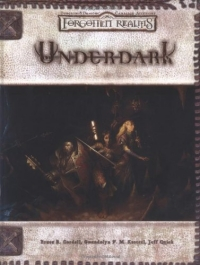

“Underdark” on the
Shelf of Many Books

Underdark
D&D 3.5
(3e)
Year
: 2003 (October)
Underdark
on Amazon
Known monsters from the book:
All-Consuming Hunger
Annihilator
Arachnoid Creature
Baphitaur
Chameleon Creature
Earth Glider
Elder Brain
Faerzress-Infused Creature
Giant Cockroach
Giant Maggot
Gloura
Half-Illithid
Ineffable Horror
Kuo-Toa Leviathan
Lith
Lurker
Maur
Mineral Warrior
Phaerlock
Portal Drake
Stone Flyer